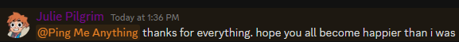

hi, im julie
i sent this message in chat and you all are probably wondering what the fuck is going on:

and the honest answer is that i wanted to kill myself. i really really fucking did. nothing felt right in my life, i had all the plans and everything. i was planning it out while walking home and i was so ready for all of my pain to finally end. the thing that stopped me(for now) was checking my discord and just. seeing everything everyone said. thank you all so much. genuinely. <3 <3 <3
but the problem is, im still not fully over it. i dont like my life at all right now. i hate the body im in, i fucking hate my voice and i feel so damn alone
but i also think im just going to be a lot less active on CTDS. dont get me wrong i still love a lot of you but i find myself getting mad at this server more easily as of recent, which is something i dont like seeing in myself, and also i just find myself barely getting anything done lately because im almost always on discord. ive taken the app off of my phone. on top of that, my mental health has just hit an all time low and im begginning to wonder if this server is a good thing for me at this time. here's a much lighter goodbye. i will still see you all, just a lot less than i used to. if i fully leave, you now know why i did, it's not any of your faults